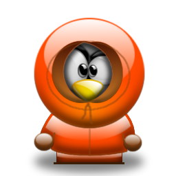
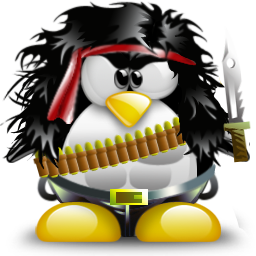
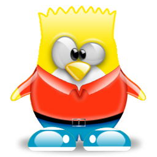
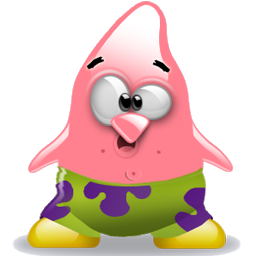
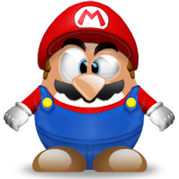

Pingu-curiosidades
Hay 18 especies únicas de pingüinos en el mundo, aunque dos especies (el pingüino saltarrocas del norte y el pingüino saltarrocas del sur) a veces se consideran la misma especie. Mientras que algunos pingüinos están muy extendidos y prosperan, 13 especies de pingüinos tienen poblaciones en declive. Cinco tipos de pingüinos se consideran en peligro de extinción y requieren medidas de protección y conservación estrictas. Adoptar un pingüino simbólicamente es una forma estupenda en la que cualquiera de nosotros puede ayudar a estas aves.
Los pingüinos se encuentran principalmente en el hemisferio sur. Aunque la mayoría de la gente asocia a los pingüinos con la Antártida, estas aves están mucho más extendidas que solo en las regiones frías. Se pueden encontrar poblaciones de pingüinos en Sudamérica, Sudáfrica, Australia y Nueva Zelanda, así como en muchas islas pequeñas del océano Pacífico sur. En cautividad, los pingüinos se pueden encontrar en todo el mundo.
La especie de pingüino más septentrional es el pingüino de Galápagos, que vive todo el año cerca del Ecuador, en las islas Galápagos. Este tipo de pingüino cruza regularmente el Ecuador hacia el hemisferio norte mientras nada en busca de alimento.
Los pingüinos perdieron la capacidad de volar hace millones de años, pero sus poderosas aletas y sus cuerpos aerodinámicos los convierten en nadadores muy hábiles. Son la especie de aves que nada más rápido y bucea a mayor profundidad, y pueden permanecer bajo el agua hasta 20 minutos seguidos.
Mientras nadan, los pingüinos saltan en arcos poco profundos sobre la superficie del agua, una práctica llamada "porpoising". Esto recubre su plumaje con pequeñas burbujas que reducen la fricción, lo que les permite nadar a una velocidad de hasta 35 km/h. También puede ayudarles a evadir a los depredadores y les permite respirar con más regularidad. Algunos científicos teorizan que los pingüinos saltan así por puro placer.
La coloración clara en la parte delantera y oscura en la parte trasera del plumaje clásico de los pingüinos, similar a la de un esmoquin, se denomina «contrasombreado». Este marcado patrón de color proporciona un excelente camuflaje desde arriba y desde abajo para proteger a los pingüinos en el agua. También les ayuda a ocultarse de sus presas para que puedan cazar con más éxito. Los pingüinos machos y hembras son muy parecidos y tienen la misma coloración.
Los pingüinos son carnívoros que capturan toda su comida viva en el mar. Dependiendo de la especie, pueden comer una gran variedad de animales marinos, incluyendo peces, calamares, camarones, krill, cangrejos y otros crustáceos. Debido a que su dieta es tan especializada, los pingüinos se denominan piscívoros.
Los ojos de los pingüinos funcionan mejor bajo el agua que en tierra firma, lo que les proporciona una visión especializada que permite detectar mejor a sus presas mientras cazan, incluso en aguas turbias y oscuras, o en aguas turbulentas.
El pingüino emperador es la especie de pingüino más grande, con una altura de hasta 120 cm y un peso de hasta 40 kg cuando es adulto y no está ayunando para incubar los huevos. El pingüino azul es el pingüino más pequeño, con una altura de solo 30 cm y un peso de solo 900 g. Se encuentra en Nueva Zelanda.
Nuestros colaboradores

Kenny McCormick es uno de los personajes principales de la serie de televisión animada South Park, junto con Stan Marsh, Kyle Broflovski y Eric Cartman. Su voz, a menudo apagada e ininteligible debido a la capucha de su parka que le cubre la boca, es obra del cocreador Matt Stone. Debutó en televisión cuando South Park se emitió por primera vez el 13 de agosto de 1997, tras haber aparecido por primera vez en los cortos The Spirit of Christmas, creados por Stone y su colaborador habitual Trey Parker. En una broma recurrente muy presente durante las cinco primeras temporadas de la serie, Kenny sufría una muerte atroz antes de volver vivo y coleando en el siguiente episodio sin apenas explicación alguna.

John Rambo es un personaje ficticio de la franquicia Rambo. Apareció por primera vez en la novela "First Blood", de David Morrell, publicada en 1972, pero más tarde se hizo famoso como protagonista de la serie de películas, en las que fue interpretado por Sylvester Stallone. La interpretación del personaje le valió a Stallone un gran reconocimiento. El término "Rambo" se utiliza comúnmente para describir a un lobo solitario que es imprudente, desobedece órdenes, utiliza la violencia para resolver problemas, se mete solo en situaciones peligrosas y es excepcionalmente duro, insensible y agresivo.

Yoda es un personaje secundario del universo Star Wars, que apareció por primera vez en la película de 1980 "El Imperio contraataca". Es un pequeño alienígena humanoide verde con un gran poder de la Fuerza que ejerció como Gran Maestro de la Orden Jedi. En "El Imperio contraataca", Frank Oz prestó su voz y manipuló el títere de Yoda, papel que repitió en "El retorno del Jedi", la trilogía precuela y la trilogía secuela. Fuera de las películas, el personaje ha sido interpretado principalmente por Tom Kane, comenzando con la serie de televisión animada "Clone Wars" de 2003. Desde entonces, Yoda se ha convertido en una figura icónica de la cultura popular debido a su peculiar forma de hablar y a su papel como sabio mentor. En su primera aparición en la trilogía original, Yoda es descrito como el mentor de Obi-Wan Kenobi y vive exiliado en el planeta pantanoso de Dagobah. Entrena a Luke Skywalker en los caminos de la Fuerza hasta su muerte a la edad de 900 años en El retorno del Jedi, aunque más tarde regresa como espíritu de la Fuerza.

Bart Simpson es un personaje ficticio de la serie de televisión animada estadounidense "Los Simpson" y forma parte de la familia Simpson. Nancy Cartwright es la actriz que le pone voz y apareció por primera vez en televisión en el corto "Good Night" del programa "The Tracey Ullman Show" el 19 de abril de 1987. El dibujante Matt Groening creó y diseñó a Bart mientras esperaba en el vestíbulo de la oficina de James L. Brooks. Groening había sido llamado para presentar una serie de cortos basados en su tira cómica "Life in Hell", pero en su lugar decidió crear un nuevo conjunto de personajes. Mientras que el resto de los personajes recibieron nombres de miembros de la familia de Groening, el nombre de Bart es un anagrama de la palabra brat (mocoso). Después de aparecer en "The Tracey Ullman Show" durante tres años, la familia Simpson recibió su propia serie en Fox, que se estrenó el 17 de diciembre de 1989. Bart ha aparecido en todos los episodios de Los Simpson excepto en "Four Great Women and a Manicure".

Patricio Estrella es un personaje ficticio de la serie de televisión animada estadounidense Bob Esponja. Su voz es interpretada por el actor Bill Fagerbakke y fue creado y diseñado por el biólogo marino y animador Stephen Hillenburg. Apareció por primera vez en el episodio piloto de la serie "Se busca ayuda" el 1 de mayo de 1999. Además de su papel secundario en Bob Esponja, Patricio es también el protagonista principal de "La serie de Patricio Estrella", que se estrenó en 2021. Patrick, una estrella de mar rosa con sobrepeso, vive debajo de una roca en la ciudad submarina de Fondo de Bikini, justo al lado del moai de Calamardo Tentáculos. Sus rasgos de carácter más significativos son su pereza y su escasa inteligencia, aunque en ocasiones demuestra ser más inteligente de lo que parece. Su ignorancia a menudo le mete a él y a su mejor amigo, Bob Esponja, en problemas. Patricio está desempleado y se autoproclama experto en "el arte de no hacer nada".

Marioes un personaje de la franquicia de videojuegos Mario, propiedad de Nintendo y creado por el diseñador japonés de videojuegos Shigeru Miyamoto. Mario, que actúa como mascota de la empresa y es el protagonista epónimo de la serie, ha aparecido en más de 200 videojuegos desde su creación. Representado como un fontanero italiano bajito y regordete que reside en el Reino Champiñón, sus aventuras suelen centrarse en rescatar a la princesa Peach del villano Koopa Bowser. El hermano gemelo y compañero de Mario es Luigi. Con el tiempo, la apariencia de Mario se ha ido definiendo: se le han añadido ojos azules, guantes blancos, zapatos marrones, una "M" roja en un círculo blanco en la parte delantera de su gorra y botones dorados en su mono. Los colores de su camisa y su mono también se invirtieron, pasando de una camisa azul con mono rojo a una camisa roja con mono azul.